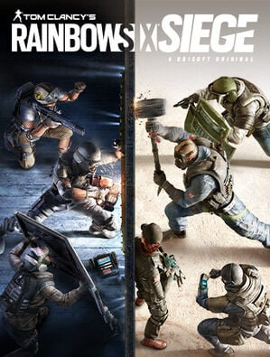

Jogos estilo FPS
Os jogos FPS (ou First-Person Shooters, em inglês) são exatamente o que o nome descreve: jogos em que a visão do personagem é em primeira pessoa e a mesma do jogador, para maior imersão. Títulos do gênero são geralmente focados em tiro, ação com armas de fogo ou brancas para combate corpo a corpo, com algumas variações. Por via de regra, o jogador não é capaz de ver o personagem que controla por completo, exceto em algumas cenas, ou usando elementos de cenário que sirvam como espelhos. As únicas partes visíveis são as mãos em geral, portando as armas e/ou equipamentos que você tem à disposição. As principais características de um jogo FPS são a visão ampla do personagem. Dessa forma, o jogador é colocado em uma posição no mapa que permite a visualização de todo o ambiente à sua volta.
Os jogos FPS são uma evolução de títulos em primeira pessoa lançados nos anos 1980 para computadores. O primeiro jogo a simular um ambiente em três dimensões foi Wolfenstein 3D (1992), seguido por DOOM (1993), que se tornou um dos mais populares do gênero FPS. Na segunda metade dos anos 1990, diversos jogos surgiram, servindo como base para os títulos mais modernos, como Duke Nukem 3D e Half-Life. Durante os anos 2000, outras séries surgiram e se tornaram extremamente populares, como Halo, Crysis e Far Cry. Hoje, entre os jogos que mais se destacam estão Destiny 2, Apex Legends, Overwatch, CS:GO. Além disso, franquias como Call of Duty, Battlefield seguem fazendo sucesso entre os fãs.
